本文是个人初学C++基础部分的备忘笔记
变量
常见整数类型：char，short，int，long，long long(long int)，对应大小：1,
2, 4, 4, 8（byte）
定义float类型变量时，编译器可能还是会隐式地设置为double类型，所以最好在数值末尾加上“f”或“F”，如float a = 3.2f
函数
定义一个明确返回值类型但是函数体内并没有返回值的函数，在外部不调用该函数返回值的情况下，使用Release模式编译能通过，使用Debug模式编译会报错。（“Debug”意义非常鲜明了 ）
从函数中创建并返回多个数据
数据类型相同
返回数组或std:::vector或std::array，返回值均可使用索引值与操作符
[] 获取元素；
1 | // 返回数组 |
数据类型不同
方法一：使用 std::make_pair()
打包并返回 std::tuple；
1 |
|
方法二：将数据打包成结构体再返回
1 | struct Data |
函数接收并返回多个数据
以左值引用 &
的方式接收参数，并在函数内进行修改，返回类型置
void即可，不受类型影响，
1 | void Modify(int& x, float& y) |
头文件
功能简述
头文件一般存放函数声明、公共宏等多个文件同时需要使用的内容，在不使用头文件的情况下，我们需要把这些声明和宏拷贝到每一个调用到这些东西的文件中去，真这么干就很可能在维护时出现各种各样的问题。所以预处理指令#include的用处就在这种时候体现，它的功能就是直白的复制粘贴，借助头文件把公共的声明和宏集中起来管理。
引号与尖括号的区别
配置完开发环境后，系统中就会存在一个存放各种自带库头文件的目录，如果需要引用的头文件属于这些库，比如cstdlib，iostream等标准库，使用方括号与引号均可。
当需要引用的头文件是工程内自定义的，或是网上下载下来的第三方库时，如果把整个库的内容都放在工程中，在引用时只能使用引号，指明该头文件存放于可能的相对路径中。如果把库安装在系统默认路径下，可使用方括号。但是如果库的安装位置不是系统默认路径，并且使用方括号引用，那么一定是找不到的。
易错点
为了避免一个头文件被多次#include到同一个翻译单元里，比如同一个工程中有log.h和add.h，其中log.h文件中包含了add.h，但是在代码量比较大的时候，我们很难随时严格地理清楚到各个文件之间的#include关系，可能就会出现在main.cpp中既#include了log.h又#include了add.h的情况，此时add.h无形中就同时被main.cpp包含了两次，这样链接时会报重复的错，所以需要一些手段来避免这样的错误。
常见的手段一般有两种：
- 在头文件内的起始位置加上预处理指令
#pragma once，指明该头文件只能被同一个翻译单元#include一次 - 使用控制宏
#ifndef - #define - #endif指令囊括整个头文件，也可以达到同样的目的：
1 |
|
指针
概述
一个指针是一个在内存中存放地址的整数，指针的类型取决于在那个地址中的数据类型；
计算机内存地址是一维线性、连续的，可想象成一条非常长的街道，路边是等间距的房子，每个房子就是一个内存地址。房子的数量一定是整数，所以房子的编号也是整数，即地址是个整数；但这个整数的位数（bit数）取决于使用的系统的位数，32位系统一个地址码就是32位，即32bit或4byte，同理64位系统一个地址码位64位或8byte。一个内存地址的储存空间是一个储存单元，一般以8位2进制即2位16进制作为一个储存单元，也就是256的大小；一个存储器的容量用字节来衡量，容量大小为储存单元的个数；
使用
void* ptr = 0
：指针类型任意，指向为0的内存地址，因为0是无效的内存地址，所以该指针是空指针，相当于NULL或nullptr（c++17）
;
*ptr = 10：利用*对指针进行解引用，就是对指针地址的内存进行操作；
char* buffer = new char[8]：在堆（heap）上申请了8个char大小的内存空间，并返回一个指向起始地址的指针；
memset(buffer, 0, 8)：向指针buffer的内存区域填充8个字节的0；
delete[] buffer：释放new在heap上申请的内存空间；
buffer = nullptr：重新将buffer指针地址置空，即回收指针，避免野指针的出现；
char** secondPtr = &buffer：二级指针，该指针地址的值为指针buffer的地址；
ps：在一行内定义多个指针变量需要注意，每个变量名之前都要加上*表示指针变量，如int *a, *b;，否则int *a, b
只定义指针变量a，而b则是普通的int类型变量；
引用
引用&是指针的一种拓展，是用来引用现有变量的一种手段，具体的方式可以理解为传递指针并进行解引用，与指针最大的区别就是只能引用已经存在的变量，不能凭空创造。
一个变量不能同时创建多个引用，也就是说如果有int a = 5; int b = 8;，现在定义int& ref = a，就不能再令ref = b，此时会创建一种a = 5 = b = 8的假命题。因此如果想改变引用的对象，还是需要以指针的形式操作，如int *ref = &a; ref = &b；
在使用有参函数的时候，如果以Function(int a, int b)的形式传参，会在内存中新分配两个int大小的空间，对a与b分别进行一次深拷贝，即分配了新的空间与地址，这样一来不论在函数中对拷贝的a与b进行怎样的修改，都不会影响到原来的a和b的值。在参数占用资源较少的情况下可以使用，如本例中的两个int，但在占用资源多的情况下，比如用一个STL的实例进行全拷贝的值传递是很浪费的。因此需要以引用的形式传参
Function(int& a, int&b)
节省资源。此时对a与b进行的是浅拷贝，也就是不会分配新的空间与地址，将a与b所在的地址交给函数管理，在函数中进行修改会直接影响原来的a与b的值。
由于以引用的形式传递参数能够有效地节省资源，所以建议在不需要修改参数值时，以const type& var的形式传递参数。
指针与数组
字符指针和字符数组、字符串相关问题不在此标题下讨论
二者的简单关系
数组名可以理解为指向数组中第一个元素（数组在内存中的起始地址）的指针，但是又不太一样，举个例子说明：
现在有一个int类型的数组
int example[5];以及一个int类型指针
int* ptr;可以直接令ptr = example，现在对*(ptr + 2)进行操作与对example[2]进行操作是等价的，操作的对象均是数组example的第二个元素，但是使用example[i]对数组元素进行操作时，有一个界限的问题，在Debug模式下，索引值需要满足既不小于0又不大于元素个数的条件，否则会报index error的错误，而使用指针*(ptr + i)却没有限制，意味着我可以修改数组所在的内存范围之外的数据，这是不安全的，使用时要格外注意。
另外，因为数组example的类型为int，因此每个元素占4个byte的内存空间，ptr + 2由前一个int元素跳转到了下一个int元素，实际上内存的跨度是2 * 4 = 8bit，因此也可以使用
*((char*)ptr + 8)来操作同一个元素。
利用指针创建数组
int* another = new int[5];
使用关键字new创建了一个新的int类型数组，与上文的example不同的是，example创建于栈（stack）上，在程序执行至所在代码段的}之外时会被自动销毁，而通过new创建的数组是分配在堆（heap）上的，意味着它的生命周期并不受任何{}的影响，而是直到手动添加的delete语句被执行时才被销毁。使用delete销毁数组指针的简单语法是：delete[] array; 另外，两种方式创建的数组在使用方式上没有任何区别，new一般在函数中创建并返回数组时使用。
值得一提的是，在类中，如果在栈上定义成员数组并初始化，那么这个数组就会在这个类的实例的栈地址上连续地扩充５个byte，意味着它们的地址在分配之后是固定的；但是如果用new定义，则这５个byte不会分配在stack上，也就是说此时实例的数据成员与实例的地址不统一，那么程序执行时就必须先找到实例的地址，再跳转到成员数组的地址，在数据较多的情况下容易造成比较大的资源浪费。
大部分情况下使用int example[size]的形式创建数组是比较好的，既有严格界限规范，又有稳定连续的地址以及安全的销毁机制、效率高等优点。
如何知道数组的长度
以int example[5]形式定义的数组获取长度的方法很简单：
1 | int len = sizeof(example) / sizeof(int) |
以new的方式定义的数组，如果仍然用上面的方法获取长度，那么第一个sizeof(example)括号中的东西就会是一个int类型的指针，在32位系统上一个地址码的长度为4
byte，意味着len就会等于4/5，被隐式强制转化为int之后就会得到一个0；因此以new的方式定义的数组，获取不了长度
:(
好在STL中构建了一个船新的数组类型供我们使用，在效率和安全性上都比raw array要有保障，使用方式也非常的平易近人：
1 |
|
从函数中返回一个数组
方法一：函数接收一个数组作为参数，在内部进行修改并返回这个数组；
将数组传入函数有三种形式：
1 | int* Function(int array[]); // 形式一：不定长，数组形式 |
其中形式二的形参数组大小是已知的，在函数内部可直接使用 5
表示数组长度；而形式一和形式三没有给出形参数组的具体大小，会造成一些麻烦，因为唯一计算长度方式是使用
sizeof(array)/sizeof(*array)，但是在函数内部进行这个计算会有很大的错误风险，比如：
1 |
|
三种方式传入的数组的长度计算结果是：2 2 2，显然是不对的，因此需要将数组作为函数参数时一定要把数组大小也作为参数一起传进去；
1 | int* Function(int* array, int size) |
方法二：在函数中从堆上创建一个新数组并返回；
在栈上定义的数组出了scope之后就会被销毁，因此只能在堆上创建数组才不会返回一个无效的指针，需要注意的一点是，在外部接收了这个数组之后一定记得用完
delete 掉，否则会造成内存泄漏；
1 | int* Get() |
方法三： 返回一个局部静态变量，在函数中进行的每次改动都会覆盖上一次的结果；
1 | int* Get() |
定长数组在定义时的长度指定问题
以int example[]形式定义定长数组时，可以留空[]，直接用大括号完成初始化工作，但当需要的容量很大时，这种形式显然非常不方便，因此希望在[]内指定一个size，一般我们会直接填一个常量，但为了程序的可持续发展，还是需要定义这个常量。
通常我们会用宏定义
#define SIZE 5替代常量：int example[SIZE];
我在学习的时候使用过const int size = 5，然后
int example[size]，发现编译器报错了，在编译器构建example时size仍然是个未知量，就会造成compile-time unknow constant的错，加以
static静态化才能通过编译；
多维指针与多维数组
简述：二维指针是指向储存一维指针的地址的地址的指针，同理二维数组就是储存一维数组的头指针的数组，而二维数组的头指针就是二维指针；以此类推理解多维指针/数组；
在堆上定义一个二维指针/二维数组：
1 | int** a2d = new int*[50]; //容量为50的指针数组 |
在堆上定义一个三维指针/三维数组：
1 | int*** a3d = new int**[50]; |
注意点一：使用 delete
释放多维指针时需要特别注意内存泄露的问题，假设我释放了二维指针
a2d ：
1 | delete[] a2d; |
现在我释放掉的内存只是储存50个一维指针的数组的内存，并不代表释放了500个int数据所占的空间，如果这么做，这2000个byte的空间就属于泄露的内存；由于无法使用诸如
delete[][] a2d;
的句法释放二级指针，只能使用循环一个个释放一维指针，直到全部释放完了之后再释放掉二级指针a2d；
1 | for(int i = 0; i < 50; ++i) |
注意点二：上述定义多维数组的方式是在堆上定义，这样会有一个问题，就是各个一维数组的分散地分布在堆上的，二维数组中只存储指向这些零散一维数组的指针，每次都需要先取得下一个一维数组的头指针，再对这个一维数组进行操作，效率是很低的；所以在非必要的情况下定义一维数组是最佳的，并且如果元素较少，也可以考虑在栈上定义二维数组，如下所示：
1 | int a[10][10]; |
不过数量少的话其实也没啥必要定义二维数组不是吗，在堆上创建是因为数目太多不想浪费栈资源不得已而为之的做法。
new/delete 关键字
new：根据数据类型在堆上申请相应大小的内存空间并返回首地址。若数据类型是一个类，则还会根据参数执行对应的构造函数；
delete：销毁对应的new创建的数据并释放申请的内存空间。若数据类型是一个类，则还会执行析构函数；
new在不指定初始化内容时会触发默认初始化机制，将所有元素初始化为0；
1 |
|
Cpp中的new与C中的malloc对应，delete与free对应。
下面两行代码在某种程度上是一样的，唯一的区别是new会调用Entity的构造函数，而malloc只完成内存空间的申请，不会进行实例化的操作；不管怎样，最好不要在C++用
malloc 申请内存。
1 | Entity* e = new Entity; |
函数指针
创建与使用函数指针
简述：函数指针可将函数置为变量；
创建方式：假设函数体如下：
1 | void Print(int a) { std::cout << "Value: " << a << std::endl; } |
创建 Hello 函数的指针 function ：
1 | void(*function)(int) = Print; // 或auto function = Print; |
也可定义一个函数指针类型，再创建函数指针变量，注意形式上需对应，否则无法赋值：
1 | typedef void(*PrintFunction)(int); |
函数指针作为函数参数
1 |
|
lambda 表达式
lambda返回一个函数指针，但很多时候无法直接写出返回的具体类型，没必要太纠结，用auto就好
句法：[capture](params) {body}
- capture：值捕获可使用变量名或者使用
=，引用捕获使用&，若有多个捕获，第一个捕获必须指定为=或者&，作为隐式默认捕获方式；若想修改值捕获的变量又不想用引用捕获，可以在参数列表后加上mutable关键字；另外，非局部变量可以不经捕获，直接使用； - params：函数参数列表
- body：函数体
例子
1 |
|
智能指针
#include <memory>
智能指针 unique_ptr
介绍与创建
上面介绍了在堆上申请内存的new关键字，之所以需要用new，简单地说就是因为在栈上创建的指针的生命周期与所在的scope{}同步，即随着程序运行出{}就会自动释放，但有时我们既需要保持局部的代码块，又需要留下其中的某个变量，因此需要引入new在堆上申请内存空间。但new也有一个问题，就是每一个用它创建的指针都需要手动使用delete释放，在指针繁多的程序中非常容易漏掉几个没有释放，造成内存泄露的大问题，所以需要对new进行改造，解决这个潜在的问题。这就是智能指针。
定义一个智能指针unique_ptr的方式如下，其中第二行使用了C++14
std::make_unique，在安全性上更好。
这里假设 Entity 是一个类：
1 | // std::unique_ptr<Entity> entity(new Entity()); |
定义完之后就跟普通的指针一样使用了，比如entity->Function()等等，程序运行出scope之后会自动释放在堆上申请的内存空间并销毁该指针；
使用经验一
以值传递的形式为 unique_ptr
赋值是不被编译器允许的，像下面这样：
1 | std::unique_ptr<Entity> entity = std::make_unique<Entity>(); |
但是用 other 接收从函数中创建并返回的
unique_ptr 却是可以的，像这样：
1 | std::unique_ptr<Entity> GetEntity() |
这是为什么呢，因为 unique_ptr
是特异的指针，也就是控制权不可以被共享，而从函数中返回的
unique_ptr
并不是以值或者引用的形式返回，而是以移动语义（右值引用）
std::move()
的方式返回，右值引用不会产生新的控制权，因此只要把上面的值传递改成移动语义就可以通过了：
1 | std::unique_ptr<Entity> other = std::move(entity); |
共享指针 shared_ptr
然而，由于unique_ptr
删除了拷贝构造函数以及它的重载方式，所以不能有两个unique_ptr共享一块内存，每一个指针都是独一无二的（unique），如果需要使用共享同一块内存的指针，需要改用
shared_ptr，其定义方式类似：
1 | // std::shared_ptr<Entity> sharedEntity(new Entity()); # don't use |
由于同类的共享指针共同维持一块内存空间的存在，需要一个记录每个指针的存在情况的数据，因此一类共享指针需要另申请一块内存用于保存未被销毁的指针数，也叫“引用计数”；因为额外申请一次内存，所以不要使用new的方式创建共享指针。
只有当同一类共享指针全部被释放之后，它们共享的某块内存才被释放；
1 | std::shared_ptr<Entity> e0; |
弱引用指针 weak_ptr
共享指针shared_ptr会将每个指针都与一块内存相关联，并共同决定内存空间的释放与否。而弱引用指针weak_ptr只临时使用这块内存空间，不参与维持它的存在，也就是不会改变共享指针的“引用计数”；
weak_ptr拥有一个.expired()的方法，返回一个表示它是否“过期”的信号，主要用于协助shared_ptr工作。因为机制上的问题，检测shared_ptr的有效性不能判定申请的内存是否被释放，而
weak_ptr与shared_ptr
有紧密的联系，它的有效与否能直接判定shared_ptr创建的对象是否被销毁，可以在对象被销毁之后阻止非法访问；
1 | std::weak_ptr<Entity> e0; |
字符串
字符串在内存中的储存位置是CONST SEGMENT，即 read-only Memory，要避免修改，防止资源浪费；
字符串以\0结尾，代表nullptr，字符指针跳转到此即被回收；
C风格
#include <stdio.h>
C语言实际上没有明确定义字符串这一概念，字符串在C中就是字符数组；
创建内容确定的字符串常量
ps: 此处的“定长”与“不定长”指的是输入时是否已知字符串长度，一旦定义完毕就都是定长的；
定长：const char str[7] = "Cherno";
容量要比字符数多1，自动补充 nullptr 作为结尾；
不定长：const char str[] = "Cherno" 或
const char* str = "Cherno"，同样自动补充
nullptr 结尾；
创建内容由用户输入的字符串常量
初始化定长空字符数组：char str[100] = {'\0'};
容量必须明确，结束标志 '\0' 不能少，否则输出异常；
读取字符串的方式：
scanf_s()，for(){scanf_s()}
，while(getchar()!='')或 gets_s()；
Ⅰ.
scanf_s()：读取一个字符串，遇到空格时停止读取，遇到回车时结束读取；第三个参数为防溢出上限，针对字符串
%s
而言最多读取（n-1）个字符，如果输入的字符串长度超过（n-1）则取消所有读取；
1 | scanf_s("%s", str, 100); // 最多读取99个字符，最后一个留给自动补全的nullptr |
也可设置将空格当作字符一并读入，仅遇到回车时停止并结束读取；（可换成任意字符）
1 | scanf_s("%[^\n]", str, 100); // 同样最多读取99个字符 |
Ⅱ. for(){scanf_s()}：循环读取，每次读取一个字符；
1 | for(int i = 0; i < 100; ++i) |
其中 scanf_s() 第三个参数仍然需要指定上限为
1，针对字符 %c 而言就是只读取一个字符；
但在这里情况比较特殊，因为数组分配了一段地址连续的内存，而字符指针char*
在读取完一个字符后会自动往后推，所以即使输入两个字符也都会被读取，同时循环次数i也会一次增加
2，但总的读取上限仍然是100，并且是一直不停地读取直至满100个字符为止；
还有一点需要注意的是，scanf_s 会把回车换行符
\n 当成 char
字符一并读取，导致实际读取的字符少于设定数目，解决这个问题的办法是在
%c 之前加上空格，忽略掉上一个换行符：
1 | for(int i = 0; i < 100; ++i) |
Ⅲ. while(getchar() != '')：读取一个字符串，以
'\n' 结尾（可换成任意字符）
1 | int i = 0; |
Ⅳ.
gets_s()：读取一个字符串，仅遇到回车时停止并结束读取；
1 | gets(str); |
打印字符串的方式：for(printf_s())
逐个字符输出， printf_s() 格式化输出；
for(printf_s())逐个字符输出：
1 | for (int i = 0; i < 100; ++i) |
printf_s格式化输出：
1 | printf_s("%s", str); |
Cpp风格
STL string 相关的内容“ 标准模板库STL”
创建字符串
因为C++兼容C的所有特性，因此上述所有的方式在C++中都可以使用，但是有一点需要注意，以指针的方式定义字符串，不加const的话编译器会直接报错，或者因为
"undifined behavior" 抛出一个警告："ISO C++11 does not
allow conversion from string literal to
char*"。因此最好加上，也确保字符串不被修改。
除了上面讲到的方法之外，C++还提供了一些宽字符类型的字符串，定义方式如下
1 | const wchar_t* str = L"Cherno"; |
wchar_t：一个字符占 8bit 或
1Byte，用前缀L声明编码类型；
char16_t：一个字符占 16bit 或
2Byte，用前缀u声明编码类型；
char32_t：一个字符占 32bit 或
4Byte，用前缀U声明编码类型；
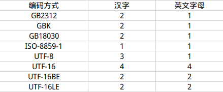
其实正常的 const char* str
也可用u8来声明编码类型，只不过这个可以省略，但上面几个都不能省；
另外，由于长字符串存在换行麻烦的问题：既要注意换行符\n，又需要给每一行都加上引号：
1 | const char* s = "Hello,\n" |
为此C++还提供了一个可换行的字符串编码类型，用前缀
R
表示，只需用引号+括号包裹起来，自动判定内容里的回车为换行符：
1 | const char* str = R"(Hello, |
读取字符串
方法一：std::cin 逐个字符读取；
1 | for (int i = 0; i < 10; ++i) |
方法二：std::cin.get() 与
std::cin.getline() 读取字符串，第二个参均表示最多读取 99
个字符；
1 | std::cin.get(str, 100); |
输出字符串
1 | std::cout << str << std::endl; |
说明
定义字符串时强烈建议使用const修饰符，避免字符串被修改。因为字符串在用数组（raw
array）的方式定义后可被以索引值修改，但是字符串储存在内存中的一片 "const
section"
只读区域，强行修改字符串中的字符会造成很大的资源浪费，最好不要修改；
假如对字符串进行了修改，比如char* name = "Cherno"; name[2] = 'a';，在Release模式下可编译可运行，但修改是无效的，输出仍然保持原有的字符串；而在Debug模式下会抛出一个段错误
"Exception Thrown"（VS）"interrupted by signal 11:
SIGSEGV"（CLion），非得修改只能用数组的形式定义char name[] = "Cherno"; name[2] = 'a'，即使可编译可运行结果正确，仍强烈不建议。
类和结构体
类与结构体的唯一区别
类中没有注明是
public还是private的成员默认为private，而结构体中默认是public；
如何选择
变量多方法少偏向结构体，反之或者二者都多时偏向类；
需要使用继承时，只用类；
构造函数
在Cpp中如果定义一个类不写构造函数，则Cpp会自动创造一个默认的构造函数，其形式上相当于
Class() = default; 或
Class(){}，没有内容即不会做任何事情，也就不会把所有的成员变量都初始化为0，因此初始化的内容必须手动填充。
大部分情况下，构造函数的功能就是对成员变量进行初始化，这里非常需要介绍一种初始化的方式：
1 | class Entity |
在形式上，将原本似乎应该在{}内进行的赋值操作通过:member(param)的操作在{}之前完成，这样的形式称为"Constructor
Member Initializer List"，即成员初始化列表。
那么为什么需要这样一个List进行初始化呢，在{}内不是已经可以了吗？
在大多数情况下，构造函数进行的初始化工作是很执行很简单的赋值语句，并在需要时做一些简单的运算，目的还是给成员变量一个值。但是当变量比较多的时候，为了达到这样简单的目的，要在{}内一个一个进行赋值，确实不太愿意写：
1 | class Entity |
像上面这样的代码这实在有些辣眼睛，我们更希望通过简洁一些的方式来做同样的事：
1 | class Entity |
实际上，这样做不仅在代码风格层面上更简洁美观，还提高了代码的效率。
每一个类都会有一个不带参数的构造函数，不论是否定义，并且在进行无参实例化的时候就会自动调用。比如下面这段代码
1
2
3
4
5
6
7
8
9
10
11
12
13
14
15
16
17
18
19
20
class Example
{
public:
Example() { std::cout << "Created Entity!" << std::endl; }
Example(int x) { std::cout << "Created Entity with " << x << "!" << std::endl; }
};
class Entity
{
private:
Example m_Example;
public:
Entity() { m_Example = Example(8); }
};
int main()
{
Entity e;
}
在Entity类中存在的Example实例会默认调用一次Example的无参构造函数，但在Entity的构造函数中重新对Example进行了有参实例化，这样无形中实例化了两次：
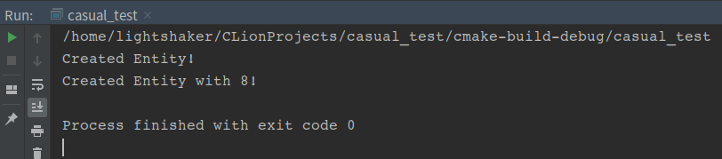
改成使用成员初始化列表，就可以避免这种浪费了
1 | class Entity |
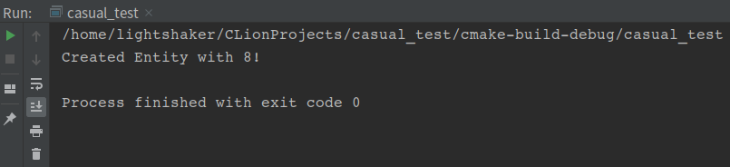
委托构造函数
当我们想让一个类的默认构造函数对成员进行初始化，又需要定义一个通过接收参数来初始化的构造函数时，并且二者的函数体相同时，往往要写两次形式非常接近的构造函数，如下：
1 | class Entity |
使用委托构造函数代替默认构造函数：
1 | Entity() : Entity(0, 1, 2) {} |
将初始化的任务委托给带参数的构造函数，省得再写一遍了，代码也更整洁；
explicit 关键字
explicit
阻止了利用单参数构造函数进行的一切隐式转换；
假设我们有这样一个类：
1 |
|
一般情况下，在栈中对这个类进行实例化的方式是：Entity e(22)以及Entity f("Cherno")，但是避免不了有这样实例化的：
1 | Entity e = 22; // 可执行 |
这在c++中其实是一种编译器层面的 隐式转换 "Implicit
conversion"，由于Entity存在只接受一个int或一个std::string的构造函数，所以Entity e = 22;其实是调用构造函数进行了一次从(int)22到Entity(22)的隐式转换。
既然如此，为什么Entity f = "Cherno";报错了？
因为字符串"Cherno"的默认类型是const char[]而非std::string，而在C++中一个语句只能执行一次隐式转换，而这行代码实际上既要执行从const char[]到std::string的转换，又要执行从std::string到Entity(std::string)的转换，两次是不行的，所以报错了，必须改成以下两种形式之一才可行：
1 | Entity f = (std::string)"Cherno"; |
如果在构造函数前加上explicit：
1 | explicit Entity(int age) : m_Name("Unknown"), m_Age(age) {} |
就不再允许使用上面的几种方式进行实例化，只能用函数的形式或强制类型转化的方式实例化：
1 | Entity b(22); // 函数形式 |
实例化的两种方式 栈or堆
Cpp支持自主选择在栈（stack）或堆（heap）上对类进行实例化；
在栈上实例化：具有确定的生命周期，与所在的{}同步，在程序运行至所在{}外时栈弹出，自动销毁实例并释放所占的内存空间；
1 | # 栈 |
在堆上实例化：生命周期由设计者决定，由new创建，对应的需要使用delete销毁实例并释放内存；
1 | # 堆 |
如何选择
大部分情况下，能在栈上创建就在栈上创建，省略取地址的时间，提高效率；
当类的内容非常多，或者需要创建非常多的实例以至于栈的容量捉急时，在堆上创建；
需要手动管理实例的生命周期时，在堆上创建；
析构函数
与构造函数对应，析构函数在实例被销毁时自动调用，也可手动调用销毁一个实例。它与构造函数的组合相当于new和delete的组合，只不过析构函数可以自动调用，而delete需要手动执行。如果没有析构函数，则就如同没有delete，当程序比较复杂、运行时间较长时，容易造成内存拥堵，申请不到内存空间而使程序崩溃。
同样，cpp会为一个没有实现析构函数的类创建默认析构函数，内容一样为空。
手动调用析构函数的方式：instance.~Class();，一般不用手动调。
虚析构函数
简介
虚析构函数的存在是为了解决销毁用 new
创建的指向子类的父类指针时因无法调用子类析构函数而造成的内存泄漏问题，解决的方式是在父类析构函数前加上
virtual
关键字使其成为虚析构函数，并且无需在子类中覆盖；
例子
1 |
|
上述代码在main中创建了一个指向子类 Derived 父类
Base 指针 poly 并销毁了它，输出结果如下：
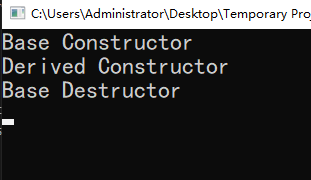
可见子类 Derived
的析构函数没有被调用，由于子类中存在堆数据
m_Array，间接导致了该数据的内存泄漏；
解决的办法就是使父类成为虚析构函数：
1 | virtual ~Base() { std::cout << "Base Destructor\n"; } |
子类无需覆盖析构函数，也会实现自动调用：
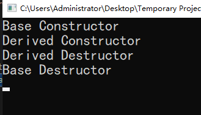
拷贝构造函数
深拷贝
以值传递的形式进行的拷贝叫做深拷贝，意思就是将目标的值完整地复制到一块新的内存地址上去，成为一个独立的复制品；
因为复制品拥有独立的内存空间与地址，所以修改它完全不会影响原变量；
1 | // 深拷贝 |
浅拷贝
以指针或引用的形式进行的拷贝叫做浅拷贝，生成的复制品使用了目标的地址，二者穿同一条裤子；
使用浅拷贝要注意一个大问题，在栈上进行浅拷贝时，栈弹出后两个指针都会被销毁，但是它们指向的是同一块内存，连着释放两次属于“undefined behavior”即编译器未定义的行为，崩不崩溃全凭运气，最好还是避免这样的情况出现；
1 | // 浅拷贝 |
拷贝构造函数
默认的拷贝构造函数对非指针成员变量进行深拷贝，对指针成员变量进行浅拷贝，也就是说一般在有指针成员变量时需要重写拷贝构造函数，对指针变量进行深拷贝。
下面这段代码定义了一个String类，但没有定义其拷贝构造函数，试运行并做简单分析：
1 |
|
默认的拷贝构造函数在被调用时只进行“类型上的”浅拷贝，就像这样：
1 | // 浅拷贝形式 一 |
回到上面完整的代码，在main函数中定义的String second = str;
进行了一次对str的拷贝，但由于str中的m_Buffer类型为指针，所以发生的拷贝是浅拷贝，即只拷贝了地址，这样就造成second与str指向了同一块内存区域，此后进行的second[2] = 'a'改动会同时改变str，并且，在析构时会进行两次delete操作，导致"undefined
behavior"的发生；
为了让拷贝的second的m_Buffer变量独立于str存在，就需要对str进行深拷贝，这就需要我们修改默认的拷贝构造函数；
我们针对指针成员m_Buffer重写拷贝构造函数：
1 | String(const String& other) |
修改完之后second的m_Buffer就会有独立的内存空间与地址，对它进行的修改也就不会再影响到str了；
拷贝构造函数在实例进行“值传递”时会被调用
创建实例的形式：
String second = str实例作为函数实参的形式：
Function(str);实例的强制类型转化形式：
xxx_cast<>()以值的形式（非引用）从函数中返回时：
return str;，因为出了函数的scope之后，函数所占有的栈内存会被释放，因此执行return语句时会先调用拷贝构造函数复制一个临时对象（地址也是临时的），返回这个临时对象后，再析构掉原对象。而返回的临时对象会在外部使用完毕后被析构；第一点容易注意到，后两者容易忽略。针对第二点，可以在定义函数时将形参修改为引用，且在没有修改实例的必要时，加上
const；针对第三点，可以使用引用返回，或者移动语义；
拷贝赋值运算符
在有必要重写拷贝构造函数的情况下，同样也需要重载赋值运算符，因为二者对指针成员默认都进行浅拷贝；
拷贝赋值运算符就是在类的内部进行重载的赋值运算符，其形参和拷贝构造函数相同
1 | Entity& operator=(const Entity& other) |
移动构造函数
stdc++ >= C++11
移动语义：源对象资源的控制权全部交给目标对象
- c++11移动方法：
std::move() - 移动方式：右值引用
- 移动与拷贝最重要的区别：是否分配新的内存空间
移动构造与拷贝构造的区别：假设有一临时对象，其地址指向一块随意的堆内存，需要另存为一个稳定的对象
- 通过拷贝构造创建新对象时，将临时对象完全复制一份（默认为指针成员浅拷贝，其余成员深拷贝，需要自行修改指针变量为深拷贝，否则容易造成内存泄漏）作为新对象，并且新对象的地址指向一块重新申请分配的等大的内存，拷贝完成后再析构掉临时对象；
- 通过移动构造创建新对象时，只将临时对象的资源直接移动给新对象，二者地址相同，指向同一块内存，省去了拷贝和析构的消耗；
移动构造函数
- 目的：解决拷贝构造函数不得不对指针做深拷贝的资源浪费问题
- 方式：以右值引用的方式传递原实例，对指针成员进行浅拷贝，同时令原对象的指针成员成为空指针
nullptr，避免之后出现重复delete同一块的内存的情况
例子：将拷贝构造函数、拷贝赋值运算符、移动构造函数、移动赋值运算符整合在一个类里进行对比
1 |
|
首先对比拷贝构造和移动构造：
1 | // Copy |
可以很明显地看出二者有以下区别：
- 拷贝构造函数对指针成员变量
int* m做了深拷贝，而移动构造函数做了浅拷贝； - 拷贝构造函数以左值引用
&的形式传参，移动构造函数以右值引用&&的形式传参； - 拷贝构造函数不需要对参数实例做任何修改，因此以
const &的形式传参，而移动构造函数中由于作了浅拷贝，需要将参数实例的指针成员置为nullptr，手动避免不安全的指针共享，因此参数不能使用const；
其次对比拷贝赋值运算符和移动赋值运算符：
1 | // Copy |
二者的区别与他们的构造函数基本相同，但移动赋值运算符与移动构造函数还有一点区别，就是移动赋值运算符需要额外判断传入的实参是不是自己本身，避免出现“自己移动给自己”的情况，因为这种情况下会把自己的成员变量置为
nullptr，无异于自杀。
分析运行结果：
先上图：
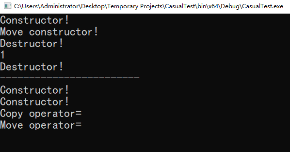
分析 main 函数与输出结果：
GetEntity()返回了一个在函数内部创建的Entity实例，先是创建实例调用了一次构造函数，然后在执行return e;语句时调用了移动构造函数将e的资源转移给临时对象，并调用析构函数销毁e，然后返回临时对象，临时对象调用GetM()方法输出结果 "1"，在std::cout执行完毕后调用析构函数销毁临时对象。整个过程对应输出结果中分隔线----------的上半部分；Entity a,b;实例化两个Entity对象，调用两次构造函数；a = b;调用拷贝赋值运算符将b的资源整体拷贝给a；a = std::move(b);调用移动赋值运算符将b的资源转移给a；
封装/可视化 Visibility
顾名思义，visible就是让类的成员部分对外开放，达到目的的手段就是对各个变量与方法进行public/private/protected归类；
一般来说，封装的结果就是部分变量对外不可见，根据继承需要划分至private与protected内，public部分仅留提供给外部使用的接口，而实现接口功能的功能函数一般也归到private内；
1 | class Entity |
封装的好处：程序维护者易读懂，使用者一看就知道怎么用；保护数据，外界不可见也不可修改；
虚函数与多态
为什么需要虚函数
当类与类之间存在继承关系并且有性质和功能相同的函数时，容易出现调用指向混乱的问题，如下：
1 |
|
其中Print函数获取了一个Player类的实例作为实参，仍然按照Entity类的GetName方法获取
了在Entity类内部定义的m_Name，因为Player继承于Entity，在执行类似这样的调用时非常容易造成混乱，因此需要引入虚函数来解决这样可能的问题。
虚函数的使用方法
简单地在基类函数的返回类型前加上virtual关键字即可，如：virtual std::string GetName() { return "Entity"; }，此时子类中对应的函数会自动成为覆盖类型override，建议加上这个标注，例如：std::string GetName() override { return m_Name; }，设置覆盖为显式覆盖，改善代码可读性；
覆盖override不等于重载overload，重载可以更改参数类型、返回类型、参数个数与函数内容，而覆盖必须在形式上与基类的函数保持一致，仅修改函数的内容；
虚函数在子类中可以不实现，但是在基类中必须实现（覆盖）。如果虚函数在基类中留空，那么即使子类实现了，并且主函数中也不构造基类的实例，仍然会报错。
如果子类在覆盖时仍然声明为虚函数，那么在子类的子类中就可以实现多态，并且不影响父类与子类的多态；
纯虚函数
纯虚函数的形式：virtual std::string GetName() = 0;
含有纯虚函数（必须是纯虚函数，普通虚函数不算）的类称为抽象类，抽象类不可被实例化，强行实例化就报错，只有对父类的纯虚函数进行复写的子类可被实例化。
纯虚函数必须在子类中被实现（复写），否则报错。复写后可以再继承给子类的子类进行二次复写。
1 |
|
多态与虚函数表
什么是多态
多态，顾名思义就是多种状态，也可理解为动态绑定，在面向对象中指的是一个接口在父子类中的多种实现方式；
从语法的角度而言，如果将基类中的某个成员函数声明为虚函数，那么其子类中与该函数具有相同原型的成员函数就也是虚函数，并且对基类中的版本形成覆盖。这时，通过指向子类对象的基类指针，或者引用子类对象的基类引用，调用虚函数，实际被执行的将是子类中的覆盖版本，而非基类中的原始版本，这就是多态。
例如上面的代码，auto* p = new Player("Cherno");
生成了一个指向子类 Player 对象的指针 p，而
PrintClassName函数指定的参数是基类指针Printable*，于是将
p 作为参数调用该函数时实现了
"通过指向子类对象的基类指针调用虚函数" 的功能，实现了接口
GetClassName 的多态；
虚函数表
问题：编译器是如何实现多态的？
答案：通过虚函数表指定虚函数入口，实现动态绑定
- 每个多态类都有一个虚表（virtual table），虚表中包括了当前类中各个虚函数的函数指针
- 每个对象都有一个指向当前类的虚表的指针（虚指针 vptr），可以理解为一个隐含的成员变量
- 构造函数中为对象的虚指针赋值
- 通过多态类型的指针或引用调用成员函数时，通过虚指针找到虚表，进而找到所调用的虚函数的入口地址，再进入该地址调用虚函数
继承与派生
基本继承方式
public 公有继承
- 继承的访问控制
- 基类的
public和protected成员，在派生类中保持原属性 - 基类的
private成员，在派生类中不可直接房问
- 基类的
- 访问权限
- 派生类中的成员函数可以直接访问基类中的
public和protected成员，无法访问private成员 - 通过派生类的对象，只能访问从基类中继承的
public成员
- 派生类中的成员函数可以直接访问基类中的
private 私有继承
- 继承的访问控制
- 基类的
public和protected成员，在派生类中成为private属性 - 基类的
private成员，在派生类中不可直接访问
- 基类的
- 访问权限
- 派生类中的成员函数可以直接访问基类中的
public和protected成员，无法访问private成员 - 通过派生类的对象，不能直接访问从基类中继承的任何成员
- 派生类中的成员函数可以直接访问基类中的
protected 保护继承
- 继承的访问控制
- 基类的
public和protected成员，在派生类中成为protected属性 - 基类的
private成员，在派生类中不可直接访问
- 基类的
- 访问权限
- 派生类中的成员函数可以直接访问基类中的
public和protected成员，无法访问private成员 - 通过派生类的对象，不能直接访问从基类中继承的任何成员
- 派生类中的成员函数可以直接访问基类中的
- protected 成员的特点
- 对于对象而言，等同于
private成员，不可直接访问; - 对于派生类而言，等同于
public成员 - 既实现数据隐藏，又方便继承
- 对于对象而言，等同于
虚继承与虚基类
问题场景
当派生类从多个基类中派生，而这些基类又有共同的基类时，很可能产生成员的重复/冗余
虚基类的声明
以 virtual 声明基类的继承方式为虚继承
1 | class B1 : virtual public B |
作用
- 解决多继承时可能发生的对同一基类继承多次而产生的二义性问题；
- 为最远派生类提供唯一的基类成员，不重复产生多次复制；
注意点
- 在第一级继承时就要将共同基类设计为虚基类；
- 最远派生类指的是实例化时所指定的类；
- 虚基类的成员只由最远派生类的构造函数通过调用虚基类的构造函数进行初始化，其他会被忽略；
- 虽然第三点，但在整个继承结构中，直接或间接继承虚基类的所有派生类，都要在构造函数的成员初始化列表中为虚基类的构造函数传递参数。如果未列出，则调用虚基类的默认构造函数；
例子
1 |
|
运行结果：
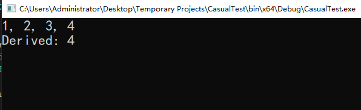
再整活整活
我们先总结以下上面这个例子的继承结构：
- 一级基类：
Base - 二级基类：
Base1、Base2，均 public 继承于一级基类Base - 派生类：
Derived，多继承于两个二级基类，在本例中被实例化，因此也是最远派生类
因为派生类 Derived
继承于两个二级基类，而两个二级基类又继承于同一个一级基类，因此需要在一级继承时设计为虚基类和虚继承。
那么我想将派生类再设计成多重继承的方式，看看会怎么样，于是我设计了一个新的继承体结构：
- 一级基类：
Base - 二级基类：
Base1、Base2，均 public 继承于一级基类Base - 三级基类：
Base12、Base21，均 public 多继承与Base1和Base2 - 派生类：
Derived，多继承于两个三级基类Base12和Base21，作为最远派生类
现在的代码变成这样：
1 |
|
一开始没有给二级继承加上 virtual
关键字，结果编译器报错："indirect nonvirtual base class is not allowed"，即间接继承非虚基类是不被允许的，在代码中的体现就是最远派生类
Derived 间接继承了两个二级基类 Base1和
Base2，但是他们并不是虚基类，因此不通过。
将二级继承改成虚继承/ 二级基类改成虚基类之后运行就正常了：
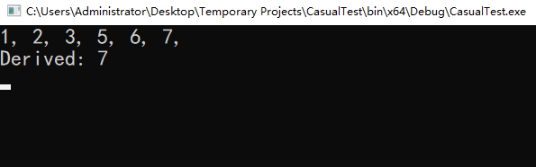
不可被继承的类
在类名后面加上 final
关键字，即声明该类为不可被继承的类，例如：
1 | class Entity final {...} |
单例类 Singleton
介绍
顾名思义，Singleton就是有且只能有一个实例的类，而且这个实例必须在类的内部完成构造，并提供全局访问的接口；在C++中，Singleton是一种整合若干全局静态变量和操作这些变量的静态函数的手段，使用的方式与命名空间很像；
特点
只需一个实例，所以不能向外界提供构造函数接口，因此需要私有化空的构造函数，同时禁止继承；
为了防止唯一的实例被拷贝，例如
Singleton instance = Singleton::Get();，需要删除拷贝构造函数，删除之后外界只能通过引用的形式创建，如auto& instance = Singleton::Get()，然后通过instance.Function()的形式来调用方法；
为了避免 Singleton::Get().Float()
这样的调用形式出现，或者要省去创建一个引用的步骤，可以另写一个静态方法如Float()，在该方法内进行Get()操作并调用相应方法，在外部以Singleton::Float()的形式调用即可。
由于类的静态成员变量需要在类内部声明，并在某个翻译单元中定义，就会在类的外部多一个Random Random::instance;的定义语句，为了在形式上统一，可以直接把定义的语句放到静态方法Get()内部，并删除private内的定义，使其成为一个类内部的局部静态变量，这样一来只会在第一次调用Get时进行初始化，以后每一次调用都返回上一次更新后的instance；
1 |
|
单例类与命名空间
实际上，像上述那样定义一个Singleton，与使用命名空间在形式和效果上都是完全一样的，举个例子如下：
1 | namespace RandomClass |
既然使用命名空间可以达到一样的效果，还要单例类干什么?
单例类与命名空间一样都是很好的工具。但是当变量和方法比较多的时候，用命名空间的形式写起来会比较散乱，并且当函数内容比较丰富时，就不能像上面这样以内联形式定义了，必须把定义部分放到空间外的某个翻译单元中去，否则会造成资源浪费。此时单例类的集成优势就比较明显了。
运算符重载
重载运算符的目的
核心目的：使用原有的运算符操作自定义数据类型；
比如我们从自己定义的类中实例化了两个对象，我们需要一个函数来实现两个对象之间对应数据的四则运算，或者是需要通过ostream输出流与右移运算符
<<
直接输出这个类的数据，但是原有的运算符并不能接受自定义的数据类型，所以这样的功能需要我们自己实现，可以通过重载的方式达到目的。既然是重载，那么就意味着保留原有的性质，只是增添了一个处理方案；
运算符按目数分类
单目运算符：运算所需变量为一个的运算符，也叫一元运算符，常见种类如下：
- 自增运算符：
++ - 自减运算符：
-- - 负号运算符：
- - 逻辑非运算符：
! - 按位取反运算符：
~ - 指针运算符：
* - 取址运算符：
& - 括号运算符：
() - 强制类型转换运算符：
(T)、Cast - 计算变量大小运算符：
sizeof
双目运算符：对两个变量进行操作的运算符，也叫二元运算符，常见种类如下：
初等运算符
- 下标运算符：
[] - 分量运算符/箭头运算符：
-> - 类/结构体成员运算符：
.
- 下标运算符：
算数运算符
加法运算符：
+减法运算符：
-乘法运算符：
*除法运算符：
/取余运算符：
%
关系运算符：
- 等于运算符：
== - 不等于运算符：
!= - 大于、大于等于运算符：
>，>= - 小于、小于等于运算符：
<，<=
- 等于运算符：
逻辑运算符
- 逻辑与运算符：
&& - 逻辑或运算符：
||
- 逻辑与运算符：
位运算符
- 按位与运算符：
&，有0则0，无0为1 - 按位并运算符：
|，有1则1，无1为0 - 按位异或运算符：
^，同0异1 - 左移运算符：
<<，丢弃移出去的位，移入的空位默认补0 - 右移运算符：
>>，同上
- 按位与运算符：
赋值运算符
- 一系列赋值运算符：
=、+=、-=、*=、/=、%=、>>=、<<=、&=、|=、^=
- 一系列赋值运算符：
逗号运算符：
,作用域解析运算符：
::
三目运算符：对三个变量进行操作的运算符，也叫三元运算符
- 格式：
<condition> ? <var1> : <var2>，其执行逻辑等价于：
1 | if(condition) |
还可以有套娃用法：left = <condition1> ? (<condition2> ? var1 : var2) : var3，逻辑等价于：
1 | if(condition1) |
运算符重载的基本规则
- C++几乎可以重载所有的运算符，但只能重载已有的运算符，不可以自己创建；
- 不可重载的运算符有：
.、.*、::、?: - 重载之后运算符的优先级和结合性都不会改变；
- 运算符通常重载为类的非静态成员函数，比如
+，或者重载为非成员函数，比如<<； - 参数个数=原操作数个数-1（后置
++和--除外） - 重载
=、[]时应该返回一个左值，即以引用形式返回
重载运算符的例子
重载双目运算符为成员函数
双目运算符即二元运算符，其参数个数等于操作数减一，即2-1=1
假设二元运算符为 + ，重载后，表达式
entity1 + entity2 等价于
entity1.operator+(entity2)
结构体Vector2中保存了两个float成员x和y，现在需要实现用该结构体定义的变量进行对应数据的加法和乘法运算。在不进行运算符重载的情况下，只能定义Add和Multiply两个方法，通过result = position.Add(speed.Multiply(powerup));的方式实现position + speed * powerup的运算。其中
{x + other.x, y + other.y}相当于
Vector2(x + other.x, y + other.y)；
1 |
|
分别将二元运算符 + 和 * 重载为结构体
Vector2 的非静态成员函数，并将左移运算符
<< 重载为非成员函数
1 |
|
重载单目自增自减运算符为成员函数
重载为类的成员函数的单目运算符，它的操作数只能是该类的一个实例
单目运算符的操作数为1，即理论上不需要参数，但有例外，见如下面的例子
重载单目运算符时需特别注意自增 ++ 和自减 --
两个运算符是前置还是后置：
- 前置，即实现
++ entity或-- entity，需要重载为类的成员函数才可实现。经重载后，表达式++ entity相当于entity.operator++() - 后置，即实现
entity ++或entity --，不仅需要重载为类的成员函数，而且需要一个int类型的形参，该参数只用于区分前置和后置，在函数中不可也无法使用。经重载后，表达式entity ++相当于entity.operator ++(0)
例子：钟表类，重置前置++和后置++位成员函数
1 |
|
运行结果如下：
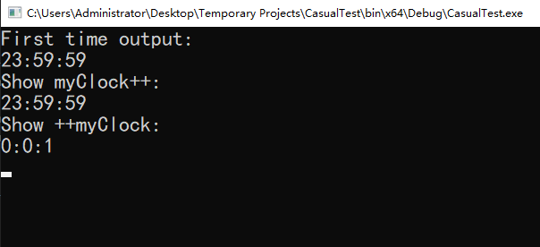
代码中可见，重载前置运算符时对成员变量做了相应的操作，并返回经过修改的已存在的实例，而重载后置运算符时则是在函数体内部创建了一个新的
Clock 实例并返回，这里有一个比较容易忽视的问题：
我在看这段代码时，对前置返回值加引用，而后置返回值不加引用产生了疑惑，当时也没多想，以为只是为了省略资源而加的，就随手给后置的返回值也加了引用，结果后置的运行结果变得无厘头，如下：
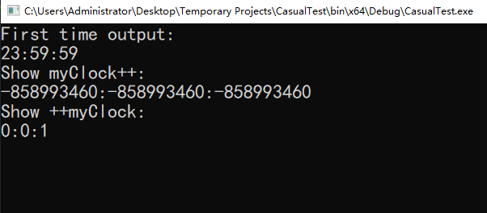
后来仔细一想，出大问题！
我们知道，从一个函数中以值的形式返回一个实例，执行
return old;
时，编译器会首先调用拷贝构造函数或移动构造函数（二者都存在就调用移动构造）用原有的实例
old
的资源复制出一份临时对象，再调用析构函数销毁在栈上实例化的原对象
old，问题就出在这里，函数返回的对象看上去是
old，实际上是拷贝出来的临时对象，而在函数内创建的
old
在拷贝完成时就已经被析构掉了，如果我们返回的是个引用，那么相当于返回了一个指向一块已经被释放了的内存的指针，自然输出的结果是离谱的；
验证我们分析得是否正确的方式很简单，在拷贝构造函数和析构函数中分别输出相应的信息就行，但要格外注意，拷贝构造函数不能只写一个
std::cout，因为写出来的拷贝构造函数会覆盖默认的拷贝构造函数，必须把拷贝的过程写出来，可用初始化列表完成；
1 | Clock(const Clock& other) |
然后注释掉 main 函数中调用后置++之外的语句，只留下
1 | int main() |
再运行，结果如下：
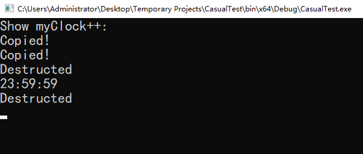
其中第一次 Copied 发生在 Clock old = *this;，将
*this 的资源拷贝给 old，第二次发生在
return old; ，将 old
的资源拷贝给临时对象；因为 Clock 成员简单，只有三个
int
数据，没有指针成员变量，所以没必要用移动构造函数了；
如果还想折腾一下，非得给后置++的重载加个返回引用有没有办法呢？答案是有的，只要在堆上实例化，old
就不会在程序执行出函数scope的时候被销毁，最简单的方式就是用
new 创建实例：
1 | Clock& Clock::operator++(int) |
同样只执行
(myClock++).showTime();，运行结果就正确了：
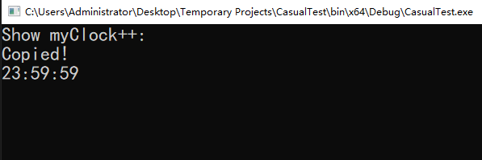
但是用 new
需要格外注意在适当的时候回收指针并释放内存，否则会造成内存泄漏。这样的运行结果显然没有释放掉创建的实例，又因为它是以引用而非指针的形式返回，我想了好一会，尝试了一些手段，也不知道怎么在保持返回引用的前提下，能让他释放掉
old 的内存，最后还是把返回类型改成了指针：
1 | Clock* Clock::operator++(int) |
不过其实用智能指针就行了，何必用 new 呢：
1 | std::unique_ptr<Clock> Clock::operator++(int) |
加上scope是为了更好地看出 unique_ptr
的自动回收功能，在p失效后立刻销毁 old，结果如下：
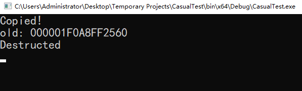
重载单目括号运算符、单目指针运算符、单目强制类型转换运算符为成员函数
一定要分清这三个单目运算符以及他们的重载形式和调用形式：
- 单目括号运算符：
()，重载形式[Type] operator()();，调用形式entity() - 单目指针运算符：
*，重载形式Type operator*();，调用形式*entity - 单目强制类型转换运算符：
(Type)，重载形式operator Type();，调用形式(Type)entity
例子：三个运算符的作用分别为如下
- 单目括号运算符
()：当操作数为Entity对象时，返回对象成员int value的值 - 单目指针运算符
*：当操作数为Entity对象时，返回对象指针成员float* fvalue指向的值 - 单目强制类型转换运算符：
(int)：当操作数为Entity对象时，允许(int)entity的强制转换 ，将对象名entity强制转换为int，返回对象成员int value的值
1 |
|
运行结果如下：

重载运算符为非成员函数
除了遵守上面的基本规则之外，重载为非成员函数还需要遵守特别的规则：
- 函数的形参表示从左到右排列的操作数
- 至少要有一个自定义类型的参数
- 重载后置单目运算符
++和--仍需要加一个int形参 - 需要操作类对象的私有成员时，声明为该类的友元函数
重载为类的非成员函数后的等价形式：
- 双目运算符：
oprd1 B oprd2等价于operator B(oprd1, oprd2) - 前置单目运算符：
B oprd等价于operator B(oprd) - 后置单目运算符：
oprd B等价于operator B(oprd, 0)
例子：重载 Complex 的加减法和
<< 运算符为非成员函数
1 |
|
运行结果如下：
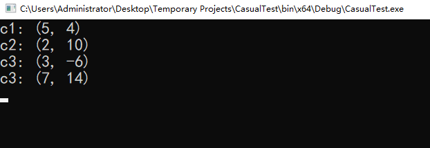
this指针与箭头操作符->
this指针
this
指向调用它的实例，属于*const类型的指针，即地址不可修改；
this
指针是默认调用的，不论是否在代码中写出来，明确写出来通常是为了视觉上更直观地分辨类成员与形参；
this->var 相当于 (*this).var；
箭头操作符 ->
箭头操作符（array operator）->
为指向一个实例的指针提供直接调用内部成员的功能。它的机制相当于是对指针进行解引用，再使用解引用后的实例调用方法或变量，例子如下：
1 | class Entity |
箭头操作符支持重载，一般在类内部含有其他类的实例并且需要调用其他类的方法时重载->，方法示例：
1 |
|
补充：利用箭头运算符获取连续数据系列中某一个值在内存中的相对偏移量：
1 | struct Vector3 |
const 关键字
修饰普通变量
const用于设定一个值不可修改的变量，如const int A = 5;被修饰的变量无法进行修改，任何a = 10之类的修改都会报错。
另外，用强制类型转换的指针可以获取const变量的地址，比如int* ptr = (int*)&A，但对指针的值进行修改，如*ptr = 3仍然不会改变A的值。
修饰指针
区分const是加在地址上还是加在地址的内容上的方法：看const位于指针符号*的左侧或右侧，左侧针对内容，右侧针对地址；
const在左侧时，与指针类型的没有顺序之分，下面二者完全等价，看个人风格选择：
1 | const int* ptr = nullptr; |
修饰类的成员
当const
用于修饰类的成员变量时，也是简单的不可被修改，通常情况下既不能在public的情况下被外部修改，也不能被内部的函数修改，但是有个例外，下文会提到。
当const用于修饰类的成员函数时，表明该函数不会对任何成员变量进行值改动：
1 | class Entity |
对于类的方法而言，const不仅仅限制了其不能对成员变量进行修改，还在外部函数为了避免深拷贝而进行const Entity& e引用调用实例时允许使用该方法。如果没有const修饰，则以浅拷贝的形式调用e无法使用Get方法。
1 |
|
在外部函数调动了一个实例但是不需要修改实例中的重要数据时，为了避免资源浪费我们通常使用带const的浅拷贝方式对实例进行调用，意味着需要给所有需要使用的方法加上const限制，这样同时也产生了一些工程上的不便，例如为了Debug需要，在类内部添加了一个仅用于调式的数据，但是由于const的限制导致了这个数据也不能修改，为了解决这个问题，可以使用mutable关键字定义那些需要指定为可修改的成员变量，如下所示，带const限制的方法Get可修改带mutable标识的成员m_x；
1 | class Entity |
static 与 extern
static 静态变量/函数
全局静态变量：只会在定义所在的文件内部被链接，作用域为文件内部全局，生命周期与整个程序同步，即在整个程序结束时才被释放。
局部静态变量：作用域为其所属函数、逻辑控制区域等代码块，生命周期与整个程序同步，即程序运行至该代码块之外时，它也不会被释放，如果程序结束之前再次执行该代码块，它就保持上一次离开该代码块时的值。同时static局部变量在外部无法访问。
1 | void Function() |
类或结构体之内的静态成员变量严格上来说既不属于类或结构体，又不属于任何实例，因为它们被所有的实例共享，并且在使用这些变量之前，需要以命名空间的形式定义它们，如int classTest::var = 1;
静态的成员方法不能调用非静态的成员变量，因为类/结构体的non-static成员函数必须被实例所调用，而在被调用时，会隐式地将这个实例作为一个参数传递给该函数使用。
举个例子就很好理解，在成员变量和参数的变量名比较相似时，为了防止视觉混淆，我们常常使用this指针来说明是成员变量而非参数变量，其实这个this是可写可不写的，因为当你调用了一个与成员变量同名的变量，它默认会指向这个实例的内部，也就是说this本来就是存在的。而静态方法不属于任何一个实例，也不需要提前生成一个实例，自然就没有隐式参数，this指针也就无效了，所以静态函数无法使用this指针。强行调用会出现
illegal reference to non-static member xxx指明所调用变量是未定义或未知的错误。
extern 全局变量/函数
与Static正好相反，extern变量或函数可被其他文件链接，但只可被定义一次，其他文件调用之前也需要声明。
枚举类型
枚举类型关键字enum一般用于需要使用几个整数来表示一些状态量的情况，必须是整数。
创建枚举类型的方式很简单，例如：
1 | enum COLOR {BLUE, GREEN, RED}; |
在不指定对应数值的情况下，默认第一个值为0，并依次递增，也就是BLUE=0, GREEN=1, RED=2
指定数值时也可以指定整数的类型（char, short, int, long, long long 以及它们的unsigned形式）：
1 | enum STATUS : unsigned char |
此例中，创建了枚举类型STATUS，枚举变量status，其中Off=0，On=1，Warning=5，Error=6，并指定了status=Error，因此程序输出的结果为：6
模板 template
函数模板
简述：函数模板是创建通用函数的一种手段，某种程度上相当于函数的重载，但避免了函数体的重复设计；
特点：函数模板在编译时是“不存在”的，它只是个用于生成函数的模板，只有在实际调用它的时候才会根据模板实参生成数据类型确定的函数，由函数模板生成的函数就叫模板函数；
定义：函数模板的定义方式如下，其中关键字
typename 可以用关键字 class
替换，二者是等价的，但是这里的 class
不同于类的关键字，只表示类型形参，比较容易引起歧义，因此习惯上用
typename 较好理解；
1 | template<typename T> |
使用：可用 <>
指明模板实参的数据类型，也可省略直接；
1 | Print(5); |
类模板
基本类模板
与函数模板基本同理，见例
1 | template<typename T, int N> |
数组类模板
利用数组类模板写一个动态数组类Array：
1 |
|
多线程
#include <thread>
创建子线程：std::thread a(*F)，a为子线程变量名，接收的参数为一个函数指针；线程创建后即刻与父线程同步运行；
父线程锁：a.join()，其功能是暂停父线程，等待子线程运行完成后再继续运行父线程；
获取线程id：std::this_thread::get_id()
线程内延时函数：命名空间
std::literals::chrono_literals，函数std::this_thread::sleep_for(1s);
示例参数表示延时1s；
代码示例：
- CMakeLists：
set (CMAKE_CXX_FLAGS "${CMAKE_CXX_FLAGS} -pthread")
1 |
|
计时器
ctime库：clock()
获取当前时刻的CLOCK数，使用区间CLOCK数除以CLOCKS_PER_SEC
可得持续时长。用clock封装一个计时器如下：
1 |
|
chrono库：利用high_resolution_clock
可进行精度更高的定时
封装两个计时器，区别在于使用
std::chrono::duration<> 与进行一个
time_point_cast 强制转换
1 |
|
封装完之后，只需在函数或者scope开头处实例化一次即可计算整个函数或者scope的耗时
类型双关 type punning
Cpp中的“类型”实际上是个壳，本质上是内存空间的不同分配量，比如一个byte定义为char，两个byte定义为short等等。
情景
如果定义一个整型数据 int a = 5;，再定义一个浮点型数据
double b;，将a作为右值赋给b的操作 b=a
是可通过编译并且能正常运行的，通过debug模式访问a与b实际地址的数据可发现，b=a
的操作实际上进行了一个 "implicit conversion"
隐式类型转换，效果上等同于显式转换 b = double(a);
问题
如果以指针的形式进行强制转换，解引用之后会出现一个莫名其妙的值：2.86087e-66
1 | int main() |
出现这个问题的根本原因是int类型只占4个byte的内存空间，而double占了8个byte，对a取址并强制转化成了一个double类型指针意味着硬是将a与a之后的4个byte的空间合并成了一个double类型，也就导致了变量b的值变得无法预估；
说明
C++的强大之处在于它可以利用指针直接对内存单元进行操作，因此对于“类型”进行内存层面上的转换处理是被允许的，比如：
1 |
|
y1直接取结构体成员变量y的值，y2则进行了多次的所谓“类型转换”，二者的运行结果是一样的；
再比如，在Entity内部加上成员函数
1 | int* Get() { return &x; } |
以左值引用的形式返回了一个指向x的指针，相当于将Entity的成员变量x, y从内存层面上转换成了一个数组，因此可以在main中以数组的形式对实例e的成员变量x和y直接进行改动，并且不会造成任何拷贝行为：
1 | int* position = e.Get(); |
联合体 union
简述
联合体（union）是一种与结构体（struct）相似的数据格式，可包含多种数据类型的变量；
二者的简要区别为：
结构体中的变量各自独立且同时存在，变量之间地址连续，可初始化所有变量；
联合体中各个变量在内存中是"重叠"的，即联合体中所有变量都存在于同一个首地址的内存中。当我们给其中任意一个变量赋值之后，其他所有的变量的值都会依据这个地址中的数据变化而发生相应的变化；这种"重叠"的性质意味着不能同时初始化或者使用联合体中1个以上的变量，否则会造成歧义和内存泄漏；
举例说明
1 |
|
这段代码中创建了一个结构体U与联合体A，在VS2019中使用Debug模式运行，查看结构体变量t的内存数据：
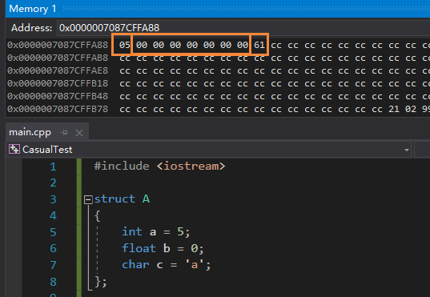
可见结构体中的三个数据类型
int，float，char
在内存中以地址连续的方式分布，互不影响
再看看联合体变量u的内存数据：
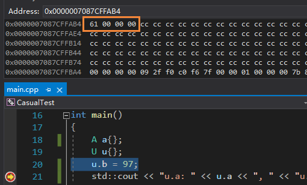
在代码中我们只对联合体的变量int b作了初始化，从内存上看，一个int占四个字节，没问题，再看输出：
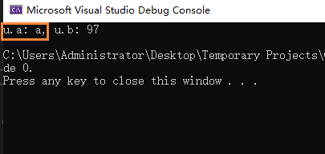
发现 u.a
变成了字母a，但代码中并没有对a作初始化，这就是联合体的"数据重叠"特性，因为a和b使用的是同一个首地址的内存，在我们给b赋值为97之后，a就会以字符变量char的数据类型对97作一个强制类型转换，而97作为ASCII码时对应的字符就是"a"；
强制类型转换
任何类型的强制转换都应该被避免
隐式强制类型转换
隐式转换（implicit conversion）就是隐式地声明类型，例如
int a = 5.2f; 将float
5.2强制转化为int5，
或者传递实参给函数时会自动进行合法的隐式强制转换；以下讨论皆为显式强制转换，即明确类型的强制转换；
显式强制类型转换 C风格
C风格的强制类型转换就是直接在变量或常量前加上(T)声明强制类型，例如
int a = int(5.2f);
强制转换的基本规则如下：
- 浮点型 -> 整型：直接取整数部分；
- 字符型 -> 整型：以ASCII码的形式转化
- 大整型 -> 小整型：只取大整型中小整型所占位数的数据
- 符号型 -> 同类无符号型：将符号位视为合法数据一并转化
显式强制类型转换 CPP风格
"上行" or "下行"的判断方式：基类->派生类为下行，反之上行
c++为显式强制类型转换提供了四个关键字，分别是
static_cast，dynamic_cast，const_cast
和
reinterpret_cast，使用它们能让开发者更容易知道工程中什么地方使用了强制转换;
static_cast
处理：编译时检查转换是否可行，一旦编译通过，运行时暴力转换
核心：暴力转换，但只在类型相同或相关时可通过编译
格式：static_cast<T> variable;
说明：static_cast的用途及特点如下：
基本数据类型之间的转换
用于类层次结构中基类和派生类之间指针或引用的转换
- 上行转换（派生类指针/引用 -> 基类）是安全的
- 下行转换（基类指针/引用 -> 派生类）由于没有动态类型检查，所以是不安全的
- 同级转换（派生类指针/引用 -> 同级派生类）编译器报错 "invalid type conversion"
- 转换后调用多态接口时以转换前实际指向的类对象作为解释物
- 转换后编译器允许调用的类方法是转换后的类的方法，而非待转换的类的方法
把空指针转换成目标类型的空指针
把任何类型的表达式转换为void类型
例子一：基本数据类型转换
1 | int a = static_cast<int>(5.2f); |
例子二：类实例指针转换
下面的代码创建了基类 Entity 以及它的派生类
Player 和 Enemy，其中接口 Print()
以多态的形式存在，派生类各有一个自己的 ClassOutput()
方法
1 |
|
按顺序依次解释：
- 隐式上行转换
1 | Entity* entity = new Enemy(); |
编译通过且运行正常，指针为指向基类 Entity
的指针，因此只能调用 Print() 方法。基类 Entity
的构造函数中初始化成员变量m_Value的值为1，原本调用
Print()
输出的结果应该是1，但是这里隐式强制转化成了指向派生类 Enemy
的指针，因此输出的结果为3；
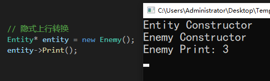
- 隐式下行转换
1 | Enemy* enemy = new Entity(); |
类型不匹配，编译器报错："a value of 'Entity*' cannot be used to initialize an entity of type 'Enemy*'' "
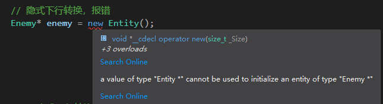
- 上行转换，待转换派生类指针指向派生类对象
1 | Entity* entity2 = static_cast<Entity*>(new Enemy()); |
上行转换，即自下而上，将派生类指针强制转化为基类指针，使基类指针指向派生类对象，转化后只能调用基类存在的方法，因为指向了派生类对象，所以Print()
输出的结果是3
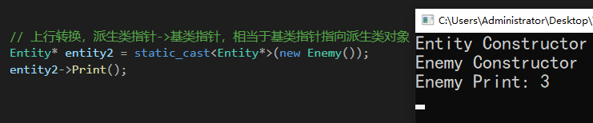
- 下行转换，待转换基类指针指向基类对象
1 | Enemy* enemy2 = static_cast<Enemy*>(new Entity()); |
下行转换，意味着由上而下，将基类指针强制转换为派生类指针，使派生类指针指向基类对象，转化后只能调用派生类
Enemy
中存在的方法，由于指向了基类对象，Print()
输出的结果是1，而调用属于派生类的 EnemyOutput()
理论上是在调用一个不存在的函数，使用static_cast转换时编译器会强行把基类对象当成派生类对象解释，但这是个不安全的操作，若使用dynamic_cast则不会通过这个转换；
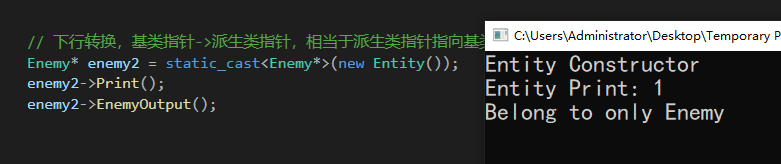
dynamic_cast
RTTI：Run-Time Type Identification，通过检测运行时的类型信息，程序能够使用基类的指针或引用来检查这些指针或引用所指的对象的实际派生类型，dynamic_cast 为RTTI的两个操作符之一，另一个是typeid
处理：编译时检查转换是否可行，运行时检查转换是否成功，不成功时返回null指针，效率较低
核心：纠正不安全的下行转换
格式：dynamic_cast<T> variable;
说明：dynamic_cast的用途及特点如下：
- 不可用于基本数据类型转换，只可用于父子类之间的实例指针或引用转换
- 主要用于纠正基类指针不恰当地指向子类对象的隐患，以更安全的方式做下行转换
- 上行转换等价于static_cast，同级转换返回null
- 下行转换必须满足条件才可通过转换：待转换基类指针指向派生类对象
- 使用时基类必须有虚函数（要求有虚函数表），否则编译过不了
- 转换后调用多态接口时以转换前实际指向的类对象作为解释物
- 转换后编译器允许调用的类方法是转换后的类的方法，而非待转换的类的方法
例子一：上行转换，待转换派生类指针指向派生类对象
将派生类指针强制转化为基类指针，等价于static_cast
1 | Entity* entity = dynamic_cast<Entity*>(new Enemy()); |
例子二：下行转换，待转换基类指针指向基类对象
最主要的使用场景：需要用基类指针指向一个派生类的对象，而隐式转换
Enemy* enemy = new Entity() 报错不可行，诸如
Enemy* enemy = (Enemy*)(new Entity());
这样的直接显式转换又过于暴力，安全性不好，因此使用
dynamic_cast，达到强制显式转换目的的同时，做运行时的转换检查，如果转换失败就返回null，确保程序安全；
下面这段代码的转换是不被 dynamic_cast 允许的，会返回null。因为
new Entity() 返回的类型是
Entity*，指向的是基类对象，而基类对象中没有
EnemyOutput 这个方法，强制转换成 Enemy* enemy
可能造成 enemy->EnemyOutput()
这样调用不存在函数的不安全操作，因此只会返回null，表示转换有隐患，取消转换；
1 | // 返回null的案例 |
例子三：下行转换，待转换基类指针指向派生类对象
正确使用dynamic_cast纠正下行转换的代码如下，基类指针
entity 正确指向派生类对象
Enemy，可执行纠正
1 | // 正确转换 |
reinterpret_cast
处理：除了const之外，可执行任意指针类型的暴力转换，产生一个新值，与原始参数有完全相同的比特位
核心：const之外的任何指针类型，暴力转换，不检测不报错
格式：reinterpret_cast<T> variable;
说明：由于 reinterpret_cast 过于暴力，使用时需要开发者注意转换是否合适，以下是推荐使用的场景：
- 指针 -> 大整型（32位系统至少是int，64位系统至少是long）
- 整型/枚举 -> 指针
- 函数Ⅰ指针 -> 函数Ⅱ指针
- 类Ⅰ对象指针 -> 类Ⅱ对象指针
- 类Ⅰ函数成员Ⅰ指针 -> 类Ⅰ函数成员Ⅱ指针
- 类Ⅰ数据成员Ⅰ指针 -> 类Ⅰ数据成员Ⅱ指针
注意点：
- 无法进行基本数据类型的转换，必须满足至少有一方是指针类型的条件
- 主要用于处理无关类型之间的强制转换
- 类型差异大时往往只能返回一个指向一块空内存的指针，内存块大小取决于转换后的类型
例子一：下行转换，待转换基类指针指向基类对象
1 | Enemy* enemy = reinterpret_cast<Enemy*>(new Entity()); |
从一个指向基类 Entity 对象的 Entity
指针转化为派生类 Enemy
指针，隐式转换编译器直接报错，dynamic_cast返回null因为
new Entity(); 创建的基类指针指向的是基类
Entity 对象而不是派生类 Enemy
对象，不被dynamic_cast允许转换。只有C风格的显示转换、static_cast与reinterpret_cast可暴力执行，当然都不安全；可能会造成调用不存在的方法或属性的情况；
例子二：同级转换
1 | Enemy* enemy = reinterpret_cast<Enemy*>(new Player()); |
同级转换不论是C风格的隐式/显式抓换，还是static_cast都不能通过编译，使用dynamic_cast也会返回null，只有reinterpret_cast可暴力强转，并且
Print() 输出的结果是 Player 类的数据 2；
例子三：合理的跨类型转换
1 | int* a = new int; |
指针转化为整型，64位系统选取长整型 long
例子二：不合理的跨类型转换
1 | int a = 1; |
第4行报错，因为上述转换相当于把整型变量 a 的值1强制当作
float* 类型的地址，而地址 0x00000000000001E1
处的值是未知的，即使换成 int*
也是一样的结果，虽然转换的过程本身不会报错，但是这种转换是没有意义的，使用时要格外注意；
const_cast
处理：去除变量的const限制，达到修改const变量的目的，或者给变量加上const属性，使其不可被修改
核心：const化 or 去const化
格式：const_cast<T> variable;
例子+说明一：普通变量去const化
通常情况下，加了const修饰符的变量是不可被修改的，但是由于C++对指针类型的强制转换几乎没有限制，因此可以通过指针强制转换让编译器通过对const变量的修改语句，如下：
1 | const int constant = 21; |
上述代码中的转换步骤
int* modifier = (int*)(&constant); 的效果就等同于使用
const_cast：
1 | const_cast<int*>(&constant); |
然而，*modifier = 10; 对编译器来说是 "undefined
behavior"，即未定义的行为，虽然表面上
*modifier 与 constant
指向的是同一个地址，但是上面的修改并不会影响到 constant
的值，也就是说输出 *modifier
的结果是我们修改后的值10，但是输出 constant
的结果还是21，我们还是无法修改掉 constant
的本值；但是可以使用 modifier 来代替 constant
作为修改后的值使用。另外，二者指向的同一个地址中的数据，是
modifier 修改后的数据：10;
例子+说明二：函数参数去const化与const化
const_cast的另一个用途就是在函数中修改已设定为const的实参，如下面的代码，一目了然
1 | void Function(const int& value) |
另一个结合参数const化和去const化的例子：
1 |
|
结构绑定
结构绑定（structured binding）是C++17的新特性，用于实现多个不同类型数据的快速捆绑
C++17之前的做法
在C++17之前，要绑定多个不同类型的变量，除了使用结构体/类之外，有两种方式可以实现；
方式一：使用 std::tuple，例子如下：
1 |
|
但是 tuple
有一个缺点，就是无法简洁直接地获取其中的变量，只能使用
std::get() 方法获取：
1 | int main() |
这样虽然可行，但是很不方便，并且加大了代码量，因此C++17
方式二：使用 std::tie()，例子如下：
1 | std::string name; |
使用 API std::tie() 绑定 name 与
age，显然要比上面使用 std::tuple
要简洁一些，但是显然需要在捆绑之前创建所有的变量，当内容较多时，代码也会显得臃肿；
C++17 结构绑定
C++17的结构绑定方式非常简单：
1 | auto[name, age] = CreatePerson(); |
一行就能完成上面多行的功能，创建变量和捆绑变量在一行之内进行，并且之后可直接访问
name 和 age
结构绑定可以一定程度上代替纯数据结构体，非常好用；
编译器 Compiler
翻译单元
我们知道进行编译时每一个cpp都会编译成一个.o或.obj文件然后链接器再去进行链接生成可执行文件，一个翻译单元（translation
unit）指的是编译生成的.o文件对应的cpp文件。注意一个cpp并不等同于一个翻译单元，当工程中每个cpp都是独立的文件，且不互相调用时，每个cpp都会被编译生成一个.o文件，这时每个cpp都是一个翻译单元。但是如果一个cpp内包含了其他所有cpp的内容，编译时只编译这个大的cpp文件时，只会生成一个.o文件，此时只有被编译的这个cpp称为翻译单元，其他不行。
链接器 Linker
链接器错误常见类型
函数只有声明没有定义，并且在主函数或者其他函数里被调用过，链接报错：Unresolved external symbol
函数声明与函数定义在函数名、参数类型、参数个数、返回值类型等处不同时，链接报错：Unresolved external symbol
同一个工程中出现重复定义的函数时，链接报错：xxx already defined in XXX
深一层原因有两种，一是同一个文件中重复定义一个函数，二是将函数定义写在头文件里，并且多个不同的文件所包含。解决方法有三种：
- 加上static关键字，使其成为静态函数。该函数只在被调用的文件内部被链接，对其他文件不可见 。
- 加上inline关键字，使其称为内联函数，该函数的body部分会直接被粘贴到被调用的地方。
- 不在头文件中写函数定义